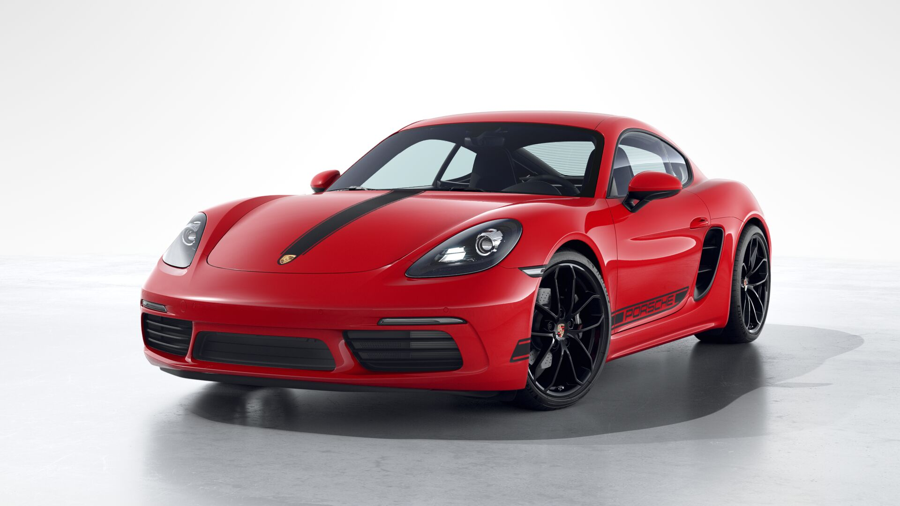

หลังจากที่ค่ายรถสปอร์ตจาก Stuttgart อย่าง Porsche ได้ปรับโฉม Boxster เป็น 718 Boxster แล้วก็ได้เวลาปรับโฉมน้องคนรองอย่าง Cayman ให้เป็นแฝดคนละฝาด้วยการเปลี่ยนเป็น 718 Cayman เช่นกันซึ่งที่มานั้นก็มาจาก Boxster เช่นกันที่ตั้งชื่อตามรถแข่ง 718 ซึ่งใช้เครื่องยนต์ แบบ 4 สูบเทอร์โบเหมือนกัน สำหรับ 718 Cayman นั้นมีการปรับปรุงภายนอก ภายในและยก เครื่อง 6 สูบทิ้ง
718 Cayman S ใช้เครื่องยนต์ 4 สูบ 2.5 ลิตรเทอร์โบวางกลาง ให้กำลังสูงสุด 355 แรงม้า (PS) ที่ 6,500 รอบ/ นาทีและแรงบิดสูงสุด 42.82 กก-ม. (420 นิวตันเมตร) ที่ 1,900-4,500 รอบ/ นาที ทำงานร่วมกับเกียร์ธรรมดา 6 จังหวะหรืออัตโนมัติ PDK 7 จังหวะส่งกำลังผ่านล้อหลังให้อัตราเร่ง 0-100 กิโลเมตร/ ชั่วโมงภายใน 4.6 และ 4.4 วินาทีตามลำดับเกียร์ธรรมดาและ PDK ส่วนความ เร็วสูงสุดอยู่ที่ 285 กิโลเมตร/ ชั่วโมง